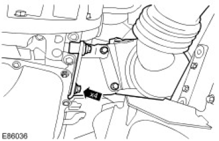
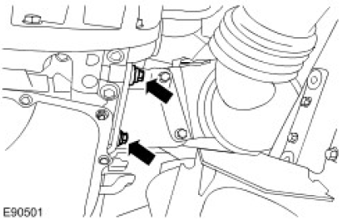
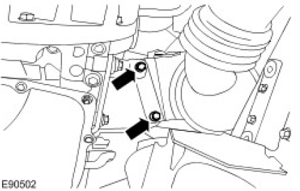

Published: Feb 1, 2007
Specifications
Torque Specifications
| Description | Nm | lb-ft |
|---|---|---|
| Catalytic converter nuts | 45 | 33 |
| Catalytic converter heatshield | 10 | 7 |
| Turbocharger heatshield | 10 | 7 |
| Catalytic converter lower bracket bolts | 30 | 22 |
| Front muffler to tail pipe nuts | 30 | 22 |
| Front muffler to catalytic converter nuts | 30 | 22 |
| Chassis crossmember nuts and bolts | 85 | 63 |
Published: Nov 28, 2006
Exhaust System - 2.4L Duratorq-TDCi (Puma) Diesel
110 COMPONENT LOCATION

| Item | Part Number | Description |
|---|---|---|
| 1 | Rear hanger | |
| 2 | Rear muffler | |
| 3 | Canter muffler | |
| 4 | Front center hanger | |
| 5 | Exhaust manifold | |
| 6 | Turbocharger | |
| 7 | Exhaust catalytic convertor | |
| 8 | Flexible joint | |
| 9 | Front joint | |
| 10 | Rear center hanger | |
| 11 | Rear joint |
90 COMPONENT LOCATION

| Item | Part Number | Description |
|---|---|---|
| 1 | Rear hanger | |
| 2 | Rear muffler | |
| 3 | Canter muffler | |
| 4 | Front center hanger | |
| 5 | Exhaust manifold | |
| 6 | Turbocharger | |
| 7 | Exhaust catalytic convertor | |
| 8 | Flexible joint | |
| 9 | Front joint | |
| 10 | Rear center hanger | |
| 11 | Rear joint |
OVERVIEW
The exhaust system is fabricated from stainless steel and is supplied as three separate assemblies;
- A front section incorporating a catalytic converter
- A center section incorporating a center muffler
- A rear section incorporating a rear muffler.
The system is attached to the underside of the body with three mounting rubbers which are located on mild steel hanger bars that are welded to the system. The mounting rubbers locate on corresponding hangers which are welded to the underside of the vehicle body.
The system has service repair items available for the down pipe and crossover pipe. Indentations with arrows show the cut points for the service replacement front section. When a service repair section is used, the pipes at the service joint are connected using an end to end sleeve clamp at the cut points.
FRONT SECTION
The front section has a welded flange with four M10 studs which provide for the attachment to four holes on the turbocharger. There is also a location bracket that connects the rear two studs back to the manifold; these are secured to the Turbocharger using four M10 nuts.
The flange is welded to the catalyst inlet cone which in turn is welded to the catalyst body. An outlet cone is welded to the bottom of the catalyst. This has an outlet elbow pipe welded to it. The outlet elbow and outlet pipe are 60mm
(2.36in) O/diameter x 1.5mm (0.06in) thick wall tube. A de-coupler is welded between the outlet elbow and outlet pipe. The catalyst is attached to the engine via a mounting bracket which is bolted to the engine using two M8 bolts.
The rear of the outlet pipe flared end locates into the center section and a loose flange is located onto the two M10 studs. The joint is made with two M10 nuts compressing and securing the joint.
CENTER SECTION
The center muffler is a rolled lock seamed 3 pass absorption construction with a capacity of 21.33 liters (1302in3). The muffler contains baffles, perforated tubes and E-glass fiber packs which reduce noise as the exhaust gases pass through the muffler. A hanger bar is welded to the front muffler inlet pipe, pointing to the left hand side and provides for the location of a mounting rubber. Another hanger bar is welded to the rear right hand side of the silencer on 90in and outlet pipe on 110in/130in. The inlet and outlet pipes are 63.5mm (2.5in) outside/diameter x 1.5mm (0.06in) thick wall tube.
The center section is secured to the rear section using a flange to flange joint. The rear mounting flange has three studs locating into three holes in the rear section and is secured with 3 x M10 nuts.
REAR SECTION
The 90in rear section uses a straight through lock seamed muffler volume 0.73 liters (44.55in³). The inlet pipe is 63.5mm (2.5in) outside diameter x 1.5mm (0.06in) thick wall tube, with a flange to connect to the center section. The outlet pipe is 70mm (2.76in) outside diameter x 1.2mm (0.047in) thick wall tube with a rolled end safety feature. The outlet pipe has a mounting bar welded to the left hand side which locates in a mounting rubber.
The 110/130in rear section uses a straight through lock seamed muffler volume 0.73 liters (44.55in³). The inlet pipe is 63.5mm (2.5in) outside diameter x 1.5mm (0.06in) thick wall tube, with a flange to connect to the center section. The outlet pipe is 63.5mm (2.5in) outside diameter x 1.2mm (0.047in) thick wall tube with a rolled end safety feature. The outlet pipe has a mounting bar welded to the left hand side which locates to a mounting rubber.
Published: Feb 1, 2007
Catalytic Converter (17.50.01)
Removal
-
 WARNING: Do not work on or under a vehicle supported only by a jack. Always support the
vehicle on safety stands.
WARNING: Do not work on or under a vehicle supported only by a jack. Always support the
vehicle on safety stands.Raise and support the vehicle.
For additional information, refer to Lifting - Remove the turbocharger heat shield.
- Remove the 5 bolts.
 Turbocharger heat shield bolts (E86031)
Turbocharger heat shield bolts (E86031) - Remove the catalytic converter heat shield.
- Remove the 2 bolts.
 Catalytic converter heat shield bolts (E86032)
Catalytic converter heat shield bolts (E86032) - Remove and discard the 4 nuts from the catalytic converter.
- Remove and discard the 4 studs from the catalytic converter.


-
NOTE: Left-hand side shown, right-hand side similar.
Remove the chassis cross member.
- Remove the 8 bolts.
 Chassis cross member bolts (E86030)
Chassis cross member bolts (E86030) - Remove the front driveshaft.
For additional information, refer to Front Driveshaft (47.15.02) - Release the catalytic converter.
- Remove and discard the 2 nuts.
 Catalytic converter nuts removal (E86035)
Catalytic converter nuts removal (E86035) - Remove the catalytic converter.
- Remove the 4 bolts.

Installation
- Install the catalytic converter.
- Loosely install the bolts.
Catalytic converter installation (E86036) - Secure the catalytic converter.
- Loosely install the new nuts.
Catalytic converter nuts installation (E86035) - Install 4 new studs to the catalytic converter.
- Install 4 new nuts to the catalytic converter.
- Tighten to 45 Nm (33 lb.ft).
- Install the catalytic converter heat shield.
- Tighten to 10 Nm (7 lb.ft).
Catalytic converter heat shield installation (E86032) - Install the turbocharger heat shield.
- Tighten to 10 Nm (7 lb.ft).
Turbocharger heat shield installation (E86031) - Tighten to 30 Nm (22 lb.ft).
- Tighten to 30 Nm (22 lb.ft).


- Tighten to 30 Nm (22 lb.ft).
- Install the front driveshaft.
For additional information, refer to Front Driveshaft (47.15.02) -
NOTE: Left-hand side shown, right-hand side similar.
Install the chassis cross member.
- Tighten to 85 Nm (63 lb.ft).
Chassis cross member installation (E86030)
Published: Jan 31, 2007
Front Muffler
Removal
-
WARNING: Do not work on or under a vehicle supported only by a jack. Always support the
vehicle on safety stands.
Raise and support the vehicle.
- Release the front muffler from the catalytic converter.
- Remove and discard the 2 nuts.
Front muffler nuts (E86035) - Release the front muffler from the tail pipe.
- Remove and discard the 3 nuts.
- Remove and discard the gasket.
 Front muffler nuts and gasket (E88192)
Front muffler nuts and gasket (E88192) - Remove the intermediate pipe and muffler.

Installation
-
NOTE: Install a new gasket.NOTE: Install new nuts.
To install, reverse the removal procedure.
- Tighten to 30 Nm (22 lb.ft).
Front muffler installation (E88192) -
NOTE: Install new nuts.
Tighten to 30 Nm (22 lb.ft).
Tighten to 30 Nm (second) (E86035)